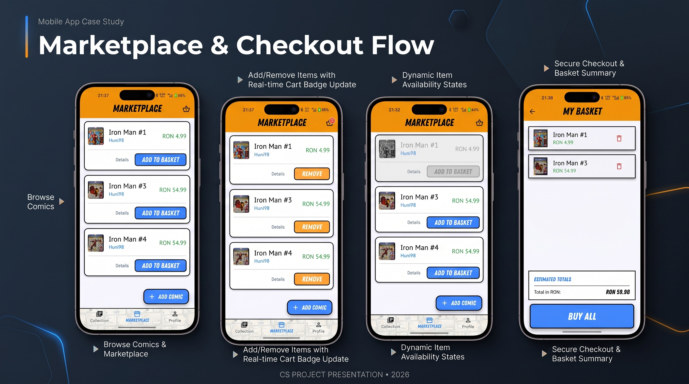
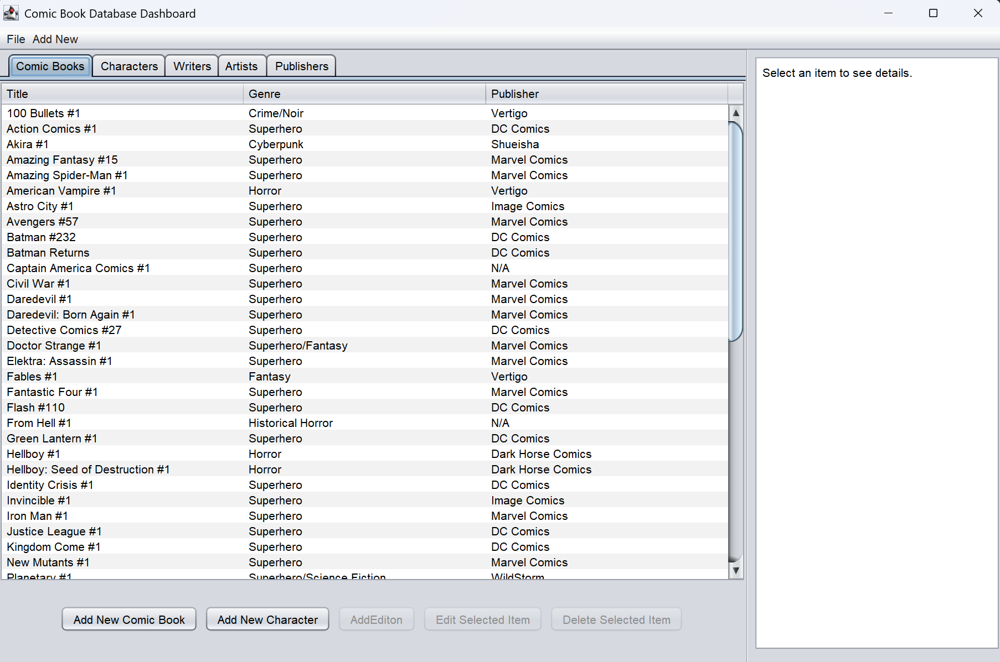
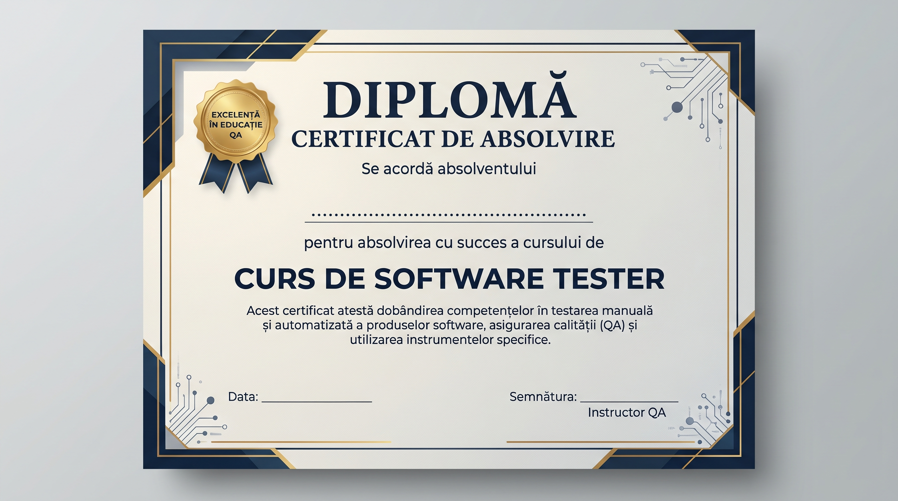

UMFST G.E. Palade Marosvásárhely 2024 - Jelenleg
Informatika alapképzés (BSc)
Fókuszterületek: Webalkalmazások fejlesztése, korszerű adatstruktúrák és algoritmusok, szoftverarchitektúrák, relációs adatbázisok és kliens-szerver hálózati kommunikáció.
UMFST George Emil Palade Marosvásárhely, Frontend & Full-Stack technológiák
Madaras Hunor vagyok – fejlesztő, problémamegoldó és egyetemi hallgató. Szakmai utam során tapasztalatot szereztem nagyvállalati szoftveres rendszerek támogatásában és optimalizálásában. Hiszek a transzparens, robusztus szoftverarchitektúrákban és a folyamatos, önálló fejlődésben. Célom, hogy megbízható, skálázható és felhasználóbarát digitális megoldásokat építsek.
Fókuszterületek: Webalkalmazások fejlesztése, korszerű adatstruktúrák és algoritmusok, szoftverarchitektúrák, relációs adatbázisok és kliens-szerver hálózati kommunikáció.
Manuális és automatizált szoftvertesztelés alapjai, követelményelemzés, tesztesetek és User Story-k írása, valamint hibakeresés és szoftverminőség-biztosítás.
Három tanév elvégzése, mely során mélyebb betekintést nyertem a programozásba és a számítástudományba. A Hallgatói Önkormányzat tagjaként részt vettem az egyetemi rendezvények szervezésében.
Erős programozási alapok megszerzése (C/C++), webdesign és adatbázis-kezelés. Záróprojektként egy filmes trailereket bemutató weboldalt fejlesztettem.
Klinikai vizsgálati szoftverek (Slate és Touch komponensek) támogatása és optimalizálása olyan kiemelt ügyfelek számára, mint a Gilead, a Pfizer és az Amgen.
Részmunkaidős pozíció az egyetemi tanulmányok mellett, amely kiváló alapot biztosított az ügyfélkommunikáció és a precíz munkavégzés terén.
Kliens-szerver architektúrára épülő mobilalkalmazás képregénygyűjtők számára. Főbb funkciók: felhasználói profilok kezelése, saját gyűjtemények rendszerezése, vonalkód-olvasó integráció és vásárlási kérelmek leadása Firebase backend támogatással. Jelenleg az alkalmazás kiterjesztése zajlik egy dedikált webes platformra.
Klasszikus asztali alkalmazás fejlesztése Windows környezetre. A projekt során a fókusz az asztali felhasználói felület (UI) tervezésén, a stabil eseményvezérelt működésen és az adatok strukturált kezelésén, tárolásán volt.

Flutter és Firebase alapú kliens-szerver alkalmazás, jelenleg webes bővítés alatt.

Asztali .NET alkalmazás képregények strukturált nyilvántartására, táblázatos adatkezeléssel és szűrési funkciókkal.

Software Development Academy (2022)
Bolyai Farkas Elméleti Líceum - Matematika-Informatika Szak